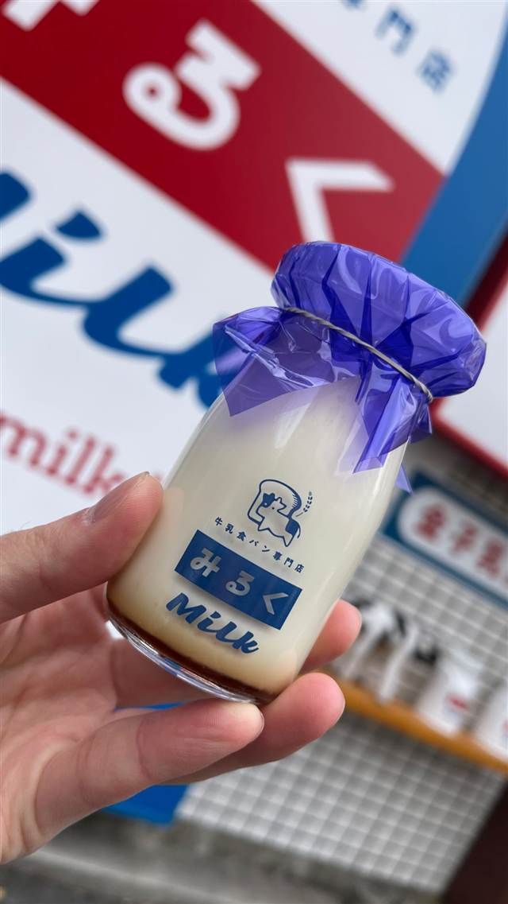
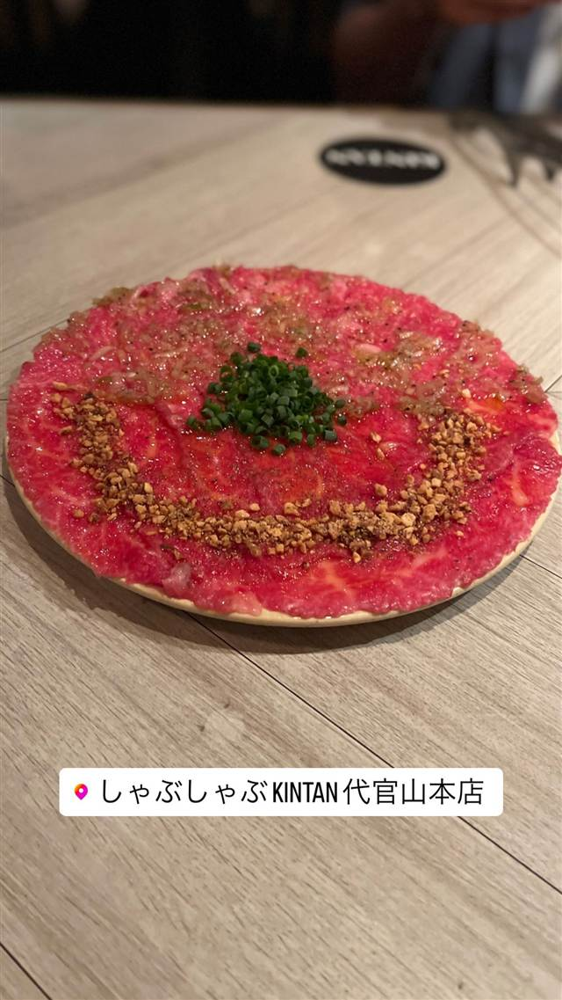
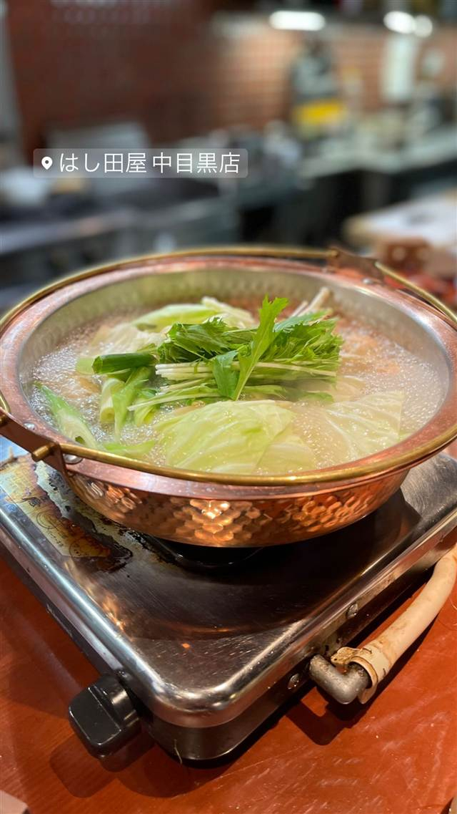
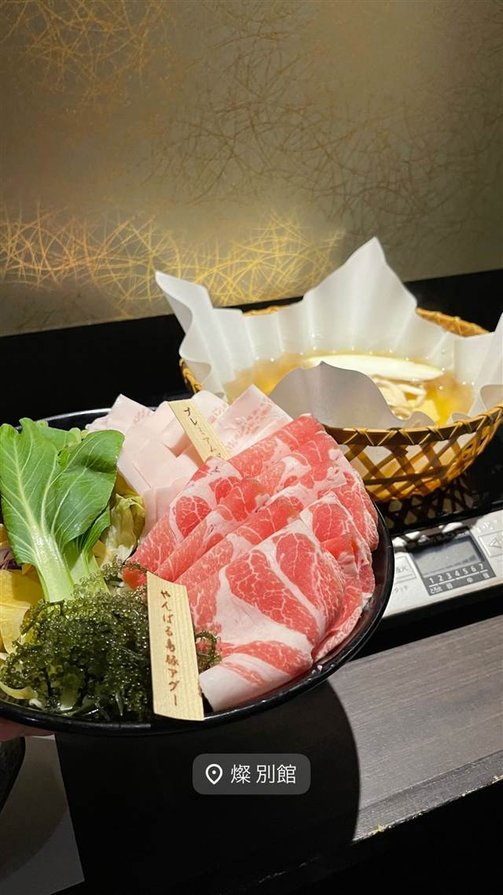
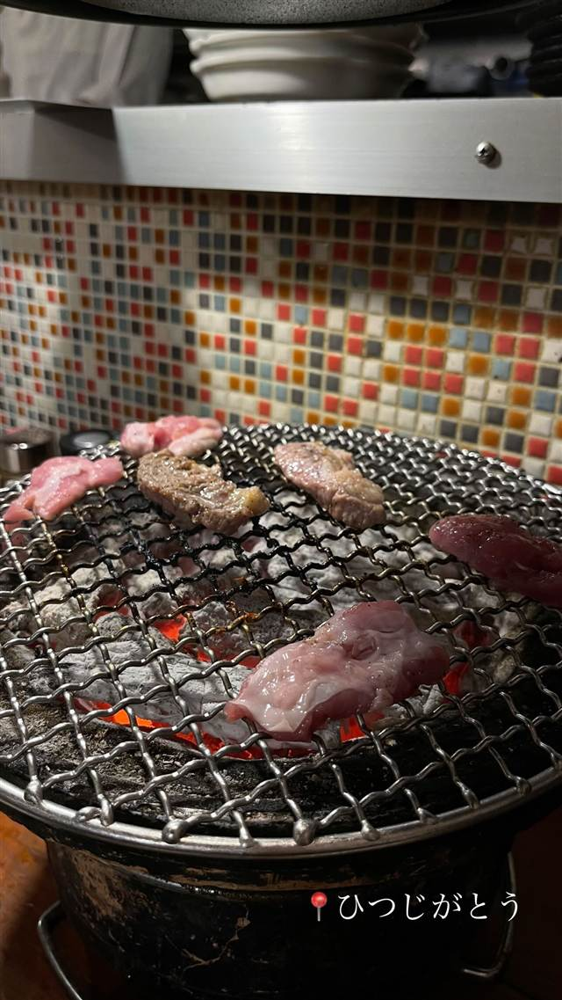
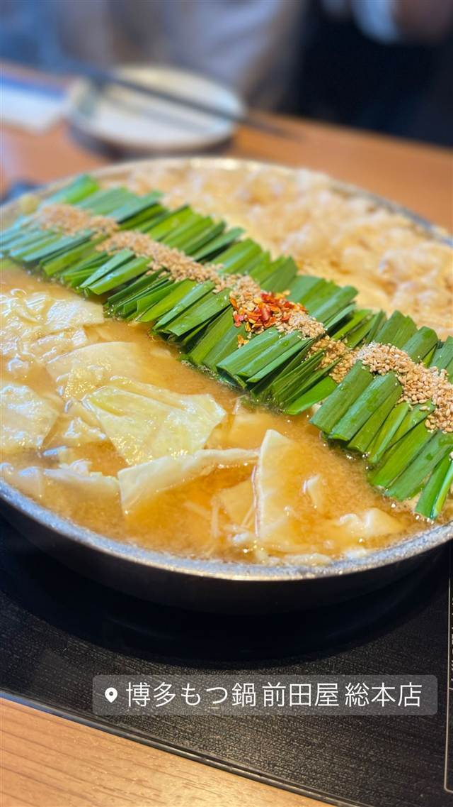
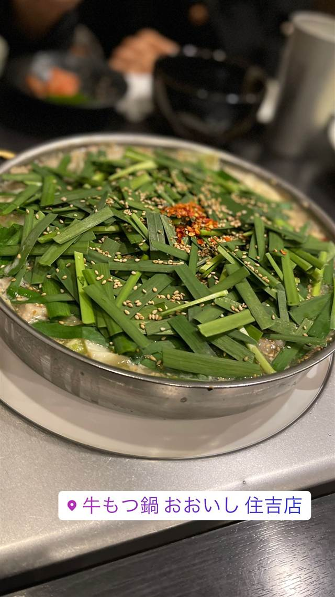
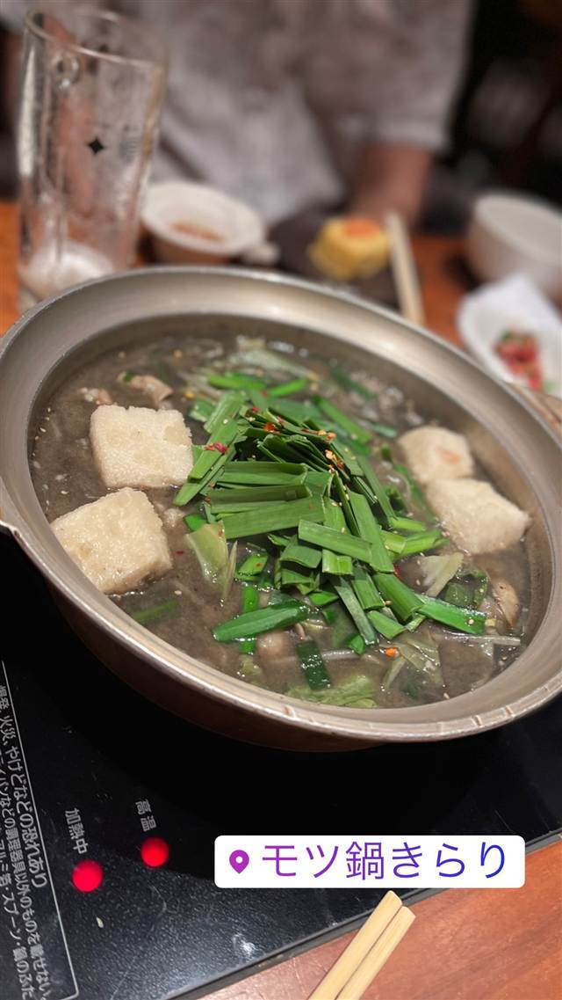
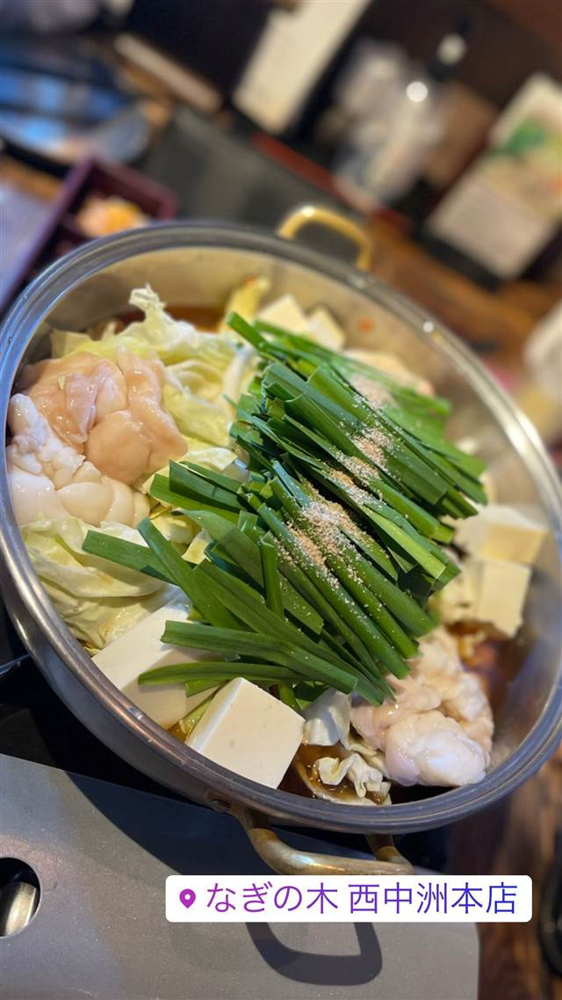
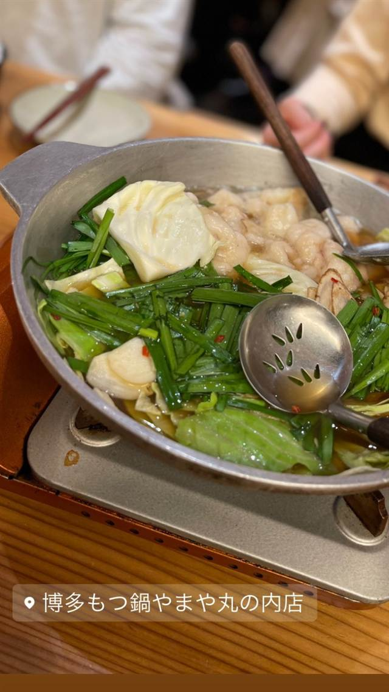

BY GENRE
鍋・しゃぶしゃぶ20店
WHY GO
わざわざ行く価値がある店3軒
しゃぶしゃぶ・すき焼き
- しゃぶしゃぶ・すき焼き 浅草 米久本店 入店時に太鼓を打つ明治期からの出迎えと当時の建物が今も残る 昼 ¥4,000～¥4,999 夜 ¥8,000～¥9,999
-

しゃぶしゃぶ・すき焼き 県庁前駅 アグーしゃぶしゃぶ みるく 那覇店 黄金だしと溶き卵・黒胡椒で食べるアグーしゃぶしゃぶ 夜 ¥6,000～¥7,999 - しゃぶしゃぶ・すき焼き 三田 三田ばさら 本店 砂糖を使わずトマトの酸味で仕立てるすき焼き 夜 ¥10,000～¥14,999
-

しゃぶしゃぶ・すき焼き 代官山駅 しゃぶしゃぶKINTAN 代官山本店 人気焼肉店の新業態、牛タンと黒毛和牛のしゃぶしゃぶ 昼 ¥1,000～¥1,999 夜 ¥8,000～¥9,999 -

しゃぶしゃぶ・すき焼き 中目黒駅 はし田屋 中目黒店 野菜を使わず鶏と卵だけで仕上げる〆の親子丼 夜 ¥5,000～¥5,999 - しゃぶしゃぶ・すき焼き ゆいレール旭橋駅 徒歩5分 あぐーおじいの店 金アグー豚だけを煮て雑味のない出汁を育てその出汁で締めまで味わう独自の一軒 夜 ¥6,000～¥7,999
-

しゃぶしゃぶ・すき焼き 県庁前駅 すき焼き 松山 燦 別館 発酵熟成の技術で仕上げるあぐー豚しゃぶしゃぶとA4黒毛和牛すき焼き 昼 ¥2,000～¥2,999 夜 ¥8,000～¥9,999 -

しゃぶしゃぶ・すき焼き 三田駅 ひつじがとう（会員制/紹介制 羊肉専門店） 完全紹介制、ラム一頭買いの炭火焼きと羊すき鍋 夜 ¥10,000～¥14,999
もつ鍋
-

もつ鍋 博多駅 博多もつ鍋 前田屋 総本店 寿司職人だった料理長が仕立てるあっさり上品なもつ鍋 昼 ¥2,000～¥2,999 夜 ¥3,000～¥3,999 -

もつ鍋 渡辺通駅 牛もつ鍋 おおいし 住吉店 国産牛もつを使う博多伝来スタイルのもつ鍋 夜 ¥3,000～¥3,999 -

もつ鍋 目黒 博多もつ処 煌梨（きらり）目黒店 食べログホットレストラン受賞、九州直送のもつ鍋 夜 ¥4,000～¥4,999 -

もつ鍋 中洲川端駅 博多 なぎの木 西中洲本店 博多で初めて天草大王を使い7時間炊き込む水炊き 夜 ¥4,000～¥4,999 -

もつ鍋 大手町駅 博多もつ鍋 やまや 丸の内店 168時間漬け込む自家製明太子が入るもつ鍋 昼 ¥1,000～¥1,999 夜 ¥4,000～¥4,999